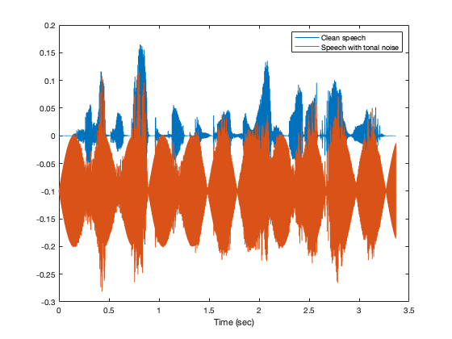
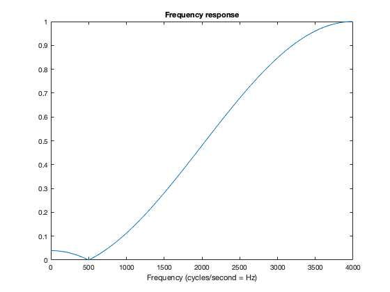

Notch filtering of tonal noise
Null out tonal noise in a noisy speech signal. Compare second-order FIR and IIR filters.
Contents
- Load data
- Plot waveforms
- Make FIR notch filter
- Display FIR pole-zero diagram
- Display FIR frequency response
- Apply FIR filter to noisy speech
- Make IIR notch filter
- Display IIR pole-zero diagram
- Display IIR frequency response
- Apply IIR filter to noisy speech
- Compare FIR and IIR filtered signals
- Export audio signals as wave files
Load data
clear [s, Fs] = audioread('clean.wav'); % speech signal [x, Fs] = audioread('noisy.wav'); % speech signal with tonal noise
sound(x, Fs)
Plot waveforms
N = length(x); t = (0:N-1)'/Fs; % t : time axis figure(1) clf plot(t, s, t, x-0.1) legend('Clean speech', 'Speech with tonal noise') xlabel('Time (sec)')
plot detail
figure(1) clf plot(t, s, t, x-0.1) xlim([0.5 0.9]) legend('Clean speech', 'Speech with tonal noise') xlabel('Time (sec)') orient landscape print -dpdf data
Make FIR notch filter
fn = 500; % frequency to null out I = sqrt(-1); b = [1 -2*cos(2*pi*fn/Fs) 1]; % filter coefficients a = 1; b = b/polyval(b, -1); % make peak gain = 1 % b = b/sum(b); % make dc gain = 1
Display FIR pole-zero diagram
The zeros are on the unit circle at angle 2*pi*fn/Fs.
figure(1)
clf
zplane(b, a)
title('FIR notch filter')
Display FIR frequency response
[H, om] = freqz(b, a);
Display frequency response (normalized frequency)
figure(3) clf plot(om/(2*pi), abs(H)) xlabel('Normalized frequency (cycles/sample)') title('Frequency response')
Display frequency response (Hz)
figure(3) clf plot(om/(2*pi)*Fs, abs(H)) xlabel('Frequency (cycles/second = Hz)') title('Frequency response')
Apply FIR filter to noisy speech
The filter suppresses tonal noise, but it also attenuates the speech waveform, leading to distortion. That is because the notch is vey wide.
y = filter(b, a, x); figure(1) clf plot(t, x, t, y - 0.1) xlim([0.5 0.7]) legend('Noisy signal', 'Filtered (FIR)') xlabel('Time (sec)')
Make IIR notch filter
Put poles at same angle, inside unit circle.
b = [1 -2*cos(2*pi*fn/Fs) 1]; % filter coefficients r = 0.95; a = [1 -2*r*cos(2*pi*fn/Fs) r^2]; % filter coefficients b = b/sum(b)*sum(a); % make dc gain equal to 1
Display IIR pole-zero diagram
figure(1)
clf
zplane(b, a)
title('IIR notch filter')
Display IIR frequency response
The notch is quite narrow, not like the FIR filter. Now, the filter will attenuate fewer frequencies.
[H, om] = freqz(b, a); figure(2) clf plot(om/(2*pi)*Fs, abs(H)) xlabel('Frequency (Hz)') title('Frequency response (IIR) filter')
Apply IIR filter to noisy speech
y2 = filter(b, a, x); figure(1) clf plot(t, x, t, y2 - 0.1) legend('Noisy signal', 'Filtered (IIR)') % xlim([0.5 0.7]) xlabel('Time (sec)')
Compare FIR and IIR filtered signals
The output of the IIR filter preserves the shape of the speech waveform better than the FIR filter.
figure(1) clf plot(t, s+0.1, t, x, t, y - 0.1, t, y2 - 0.2) xlim([0.5 0.7]) legend('Clean signal','Noisy signal', 'Filtered (FIR)', 'Filtered (IIR)') xlabel('Time (sec)') title('Tonal noise suppression by notch filtering') orient tall print -dpdf signals

Export audio signals as wave files
audiowrite('output_FIR.wav', y, Fs); audiowrite('output_IIR.wav', y2, Fs);
Listen to filter output
% sound(x, Fs) % noisy % sound(y, Fs) % Output of FIR notch filter % sound(y2, Fs) % Output of IIR notch filter